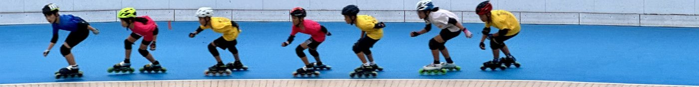
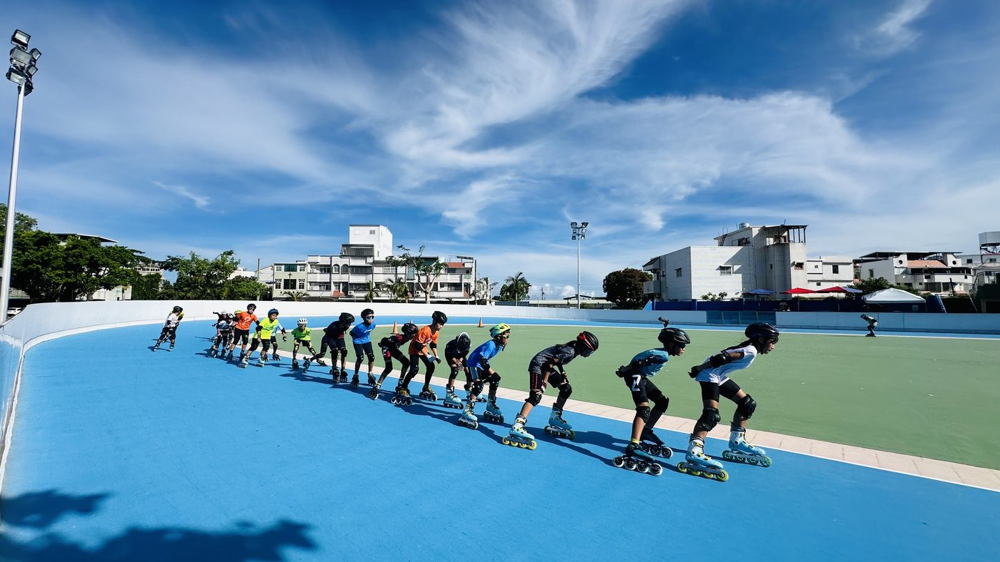
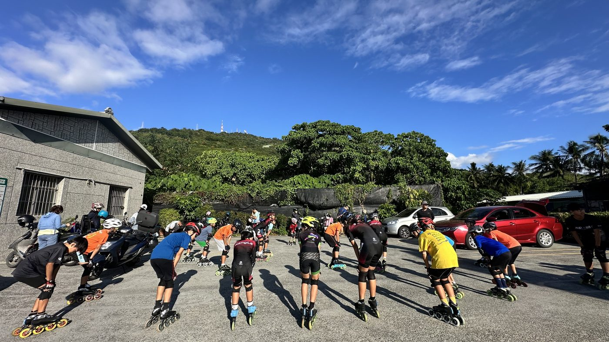
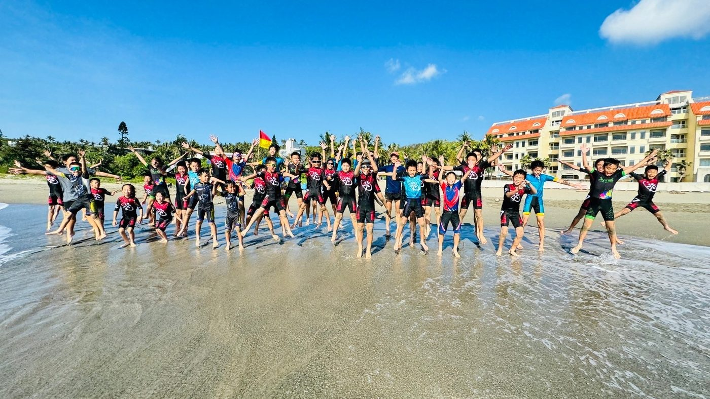

01我的故事
在台灣東部的一隅，有一群孩子，每天下課後最期待的，不是打電動滑手機，而是穿上國手淘汰捐贈磨到快破的溜冰鞋，在場上飛馳，擁有不容忽視的毅力與夢想，我們是一支由偏鄉小學組成的隊伍～台東康樂國小的溜冰隊。
小小的溜冰隊，沒有華麗的裝備，連訓練用的護具，都是學長姐一代傳一代留下來的。但，孩子們有著最珍貴的那顆，永不放棄的心。
在人力資源不足的後山，唯一的教練是康樂國小體衛組長 吳子德老師，除了正規練習時間，即使沒有額外的薪資，卻像待自己的孩子一樣，犧牲週末帶孩子做各種練習，沒有足夠經費買練習用具，老師就自己動手做，即便天色已暗、寒風凜冽，依然可見老師教學的汗水與一雙雙堅定的眼神。
溜冰隊成立至今已有數十年的時間，今年我們參加了中正盃和有氧盃全國賽，並取得優秀的成績，也曾在113年獲得有氧盃全國溜冰錦標賽國小組總冠軍，實力不容小覷。做為縣內唯一的溜冰隊，築夢之路很艱難，但台東學子不向命運低頭的韌性，我們始終相信：「我們，做得到。」
台東地理位置偏遠，交通不便，每一次的全國比賽，都得翻山越嶺。孩子們不曾抱怨，因為對他們來說，每一次遠行，都是朝夢想更近一步的動力。然而，每一次比賽的背後，是家長與學校極大的經濟壓力——小選手參加滑輪溜冰的全國賽事五至六天的住宿與餐食、翻山越嶺的交通費及比賽級裝備的高額費用，對後山資源不足的家庭來說是一筆沉重的負擔。
每一次跌倒，磨破了衣服，也磨不掉孩子的熱血，摔得遍體鱗傷，也摔不掉夢想。
夢想要前進，需要一雙好鞋、一套護具、一張車票。我們相信，只要多一點的資源，孩子更能成長茁壯。
讓我們一起，成為夢想的推手，與康樂國小攜手，成為孩子心中最強大的鼓勵與肯定。
看見後山孩子的力量，陪他們滑過風雨，奔向名為夢想的旅程。




推薦理由
他們曾在各項全國溜冰錦標賽中獲獎無數，且113年獲得有氧盃全國溜冰錦標賽國小組總冠軍，展現出台東學子不向命運低頭的韌性。